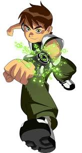

Ben 10
Ben Tennyson, também conhecido como Ben ou Ben 10, é um super-herói que pode se transformar em dez alienígenas diferentes. Ele usa o Omnitrix, um dispositivo semelhante a um relógio que lhe permite fazer isso.
SBT
Ben Tennyson, também conhecido como Ben ou Ben 10, é um super-herói que pode se transformar em dez alienígenas diferentes. Ele usa o Omnitrix, um dispositivo semelhante a um relógio que lhe permite fazer isso.
SBT